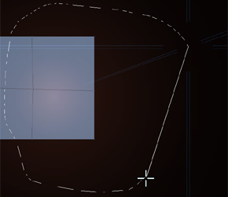
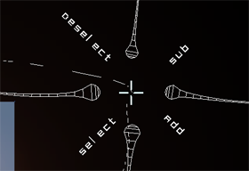

|
S E L E C T
There are a number of ways to select and unselect geometry.
Three of them are available directly and the rest can be found
in the popup menus. Each of them has their own advantages so
it is recommended to use all of them.

|
By left clicking in empty space and drawing a circle around
a part of a model, it will be selected. Be careful not to cross
any edges when releasing since this will trigger the delete
edge feature. If you when drawing a selection return to the
spot where you started your selection a popup will appear and
will give you a few options:

|
"Select" selects the circled vertexes.
"Deselect" selects the circled vertexes.
"Add" makes the selected vertexes 25% more selected then they are (but not more then 100%)
"Subtract" makes the selected vertexes 25% less selected then they are (but not less then 0%)
To de-select simply Left click in empty space without dragging. (dragging
will create an edge)
You can also select a vertex by simply clicking on it, be
careful not to drag it since that will create an edge.
You can also select all vertexes in a polygon by clicking on it. If some of the
vertices already are selected the rest will be selected too, but
if all vertices already are selected it will deselect all the
vertices used by the polygon. This allows you to toggle the selection.
|